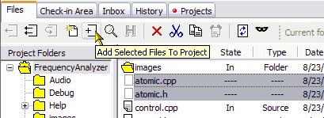

When you create files outside of Code Co-op, save these files within the project directory tree. They will appear in the Files tab as not-in-project (blank icon).
Select the files and click the "Add Selected Files" button from the toolbar. Later, once you check-in these files, they will officially become part of the project and other members will be able to see them.

We recommend creating new source and text files from inside Code Co-op. The advantage is that the file will automatically be added to the project (panding a check-in), and that Code Co-op may initialize them with a copyritht string of your choice, or with an include guard for C/C++ header files. Select the Create File button. You will be prompted for file name and type.